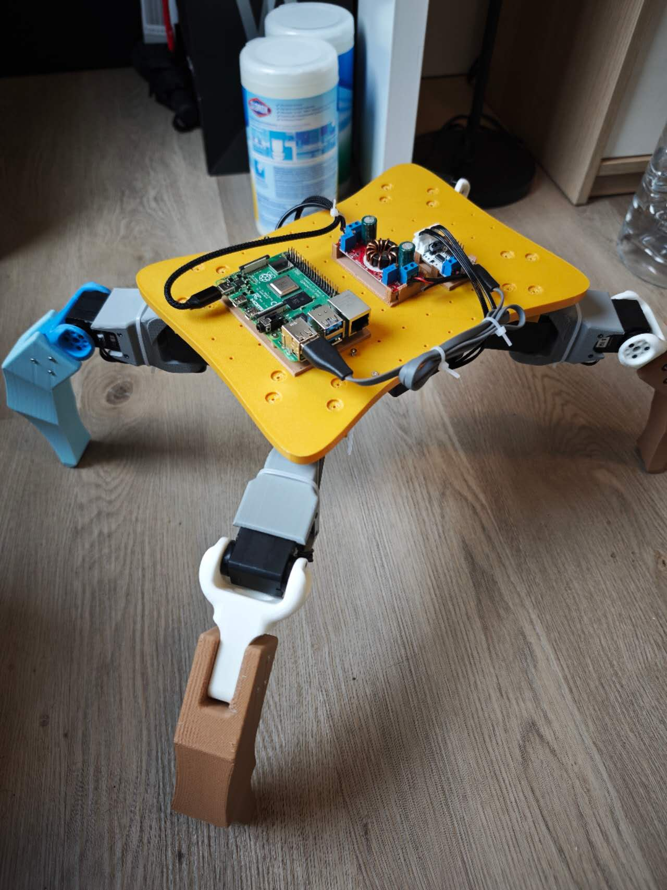
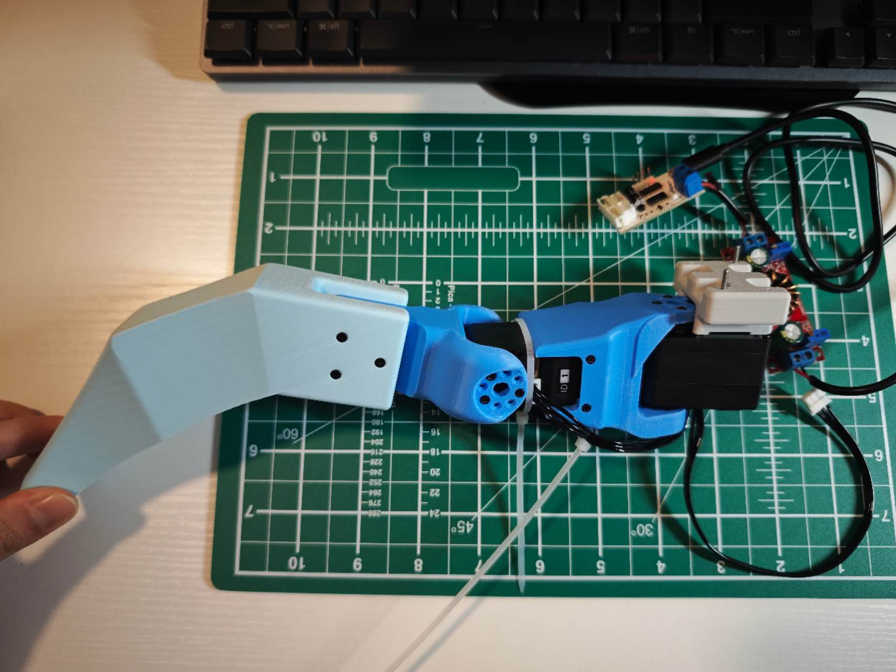
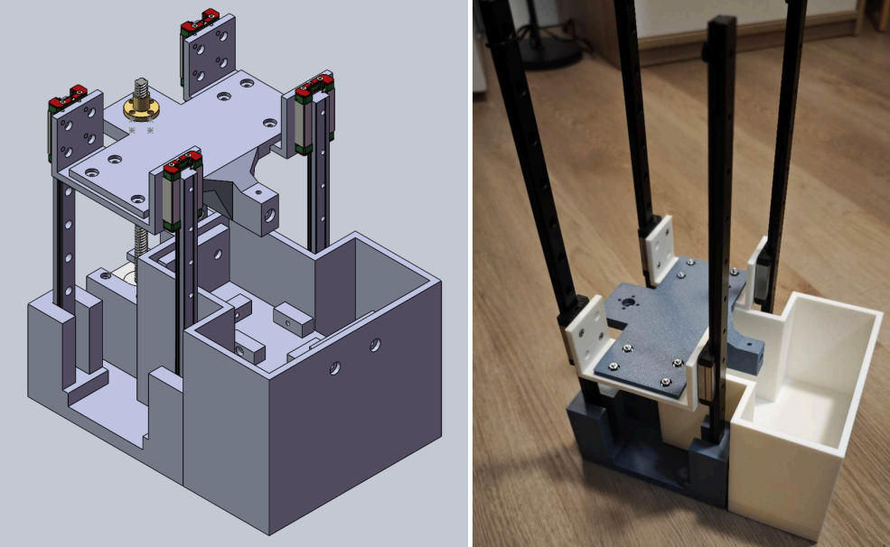
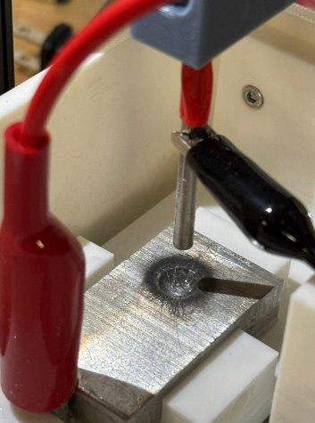
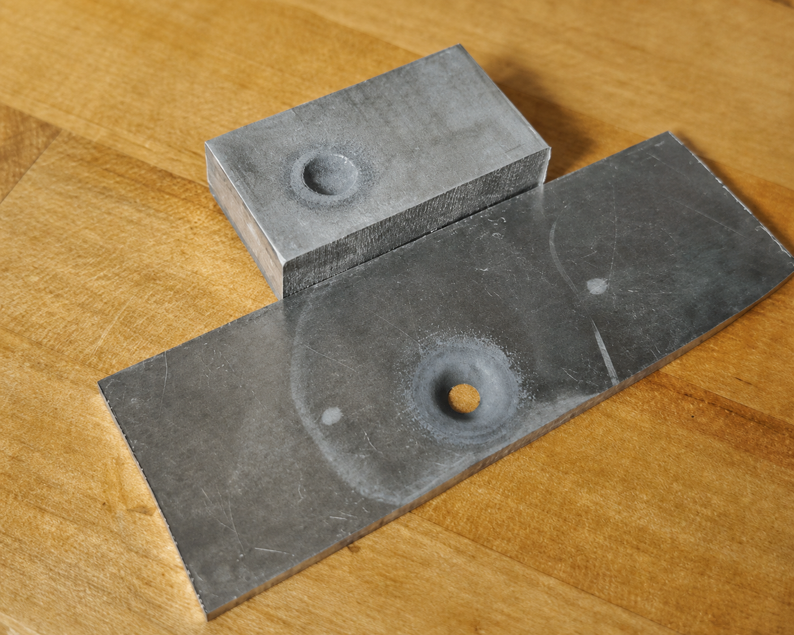
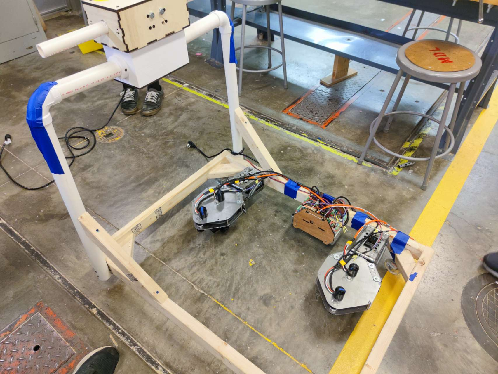
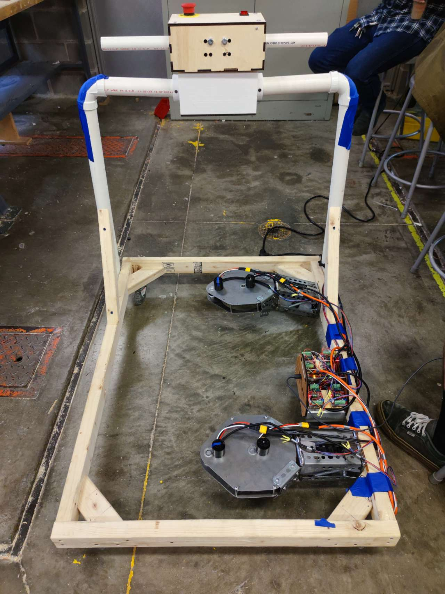

01 / PROJECT EXPERIENCE
Built to
perform.
Three systems developed through mechanical design, control, fabrication, and experimental validation.
ROBOTICS / CONTROLS · 2025
Quadruped
Robot System
Designed, fabricated, and validated a servo-driven quadruped robot. Implemented manual and reinforcement-learning gait strategies, real-time servo control, and feedback protection for stable locomotion.

CLICK TO WATCH ↗
MANUFACTURING / MOTION · 2025
Electrochemical
Machining System
Designed and built a benchtop electrochemical machining system for precision metal removal. Developed a functional prototype and evaluated motion control, tool positioning, and process stability through experimental trials.



PRODUCT DESIGN · 2023
Motorized Caster
Wheel Module
Developed an auxiliary mobility module for logistics carts to reduce manual handling. Benchmarked steering systems and fabricated a working prototype using sheet-metal parts and 3D-printed components.

